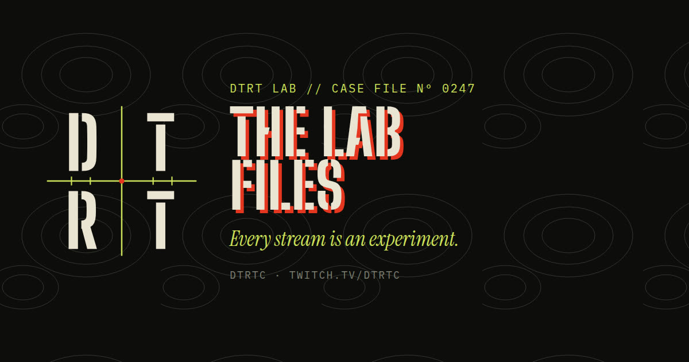

IAN / DTRTC · THE LAB FILES
Good rounds.
Bad decisions.
Real moments.
CS2 with Ian: the plays, the chaos, and the people who make a match worth remembering.

START HERE · 6:26
Come On Code
The first Lab File. Watch on YouTube
FROM THE STREAM
A round is all it takes.
MEET IAN
Welcome to
the Lab.
I'm Ian, known online as DTRTC. This is where my streams, gaming videos, music, and stories live.
The Lab Files bring moments from the stream into videos you can watch on your own time. Come for a round. Stay for the conversation.
Twitch notifications are the easiest way to know when I'm streaming.
BEYOND THE MATCH